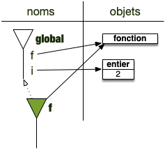

Mémoire et espace de noms
On montre comment on peut gérer les variables dans un programme, et l'utilité des espaces de noms (en prenant l'exemple de python) pour le faire.
Nous ne rentrerons pas dans les détails, la gestion de la mémoire est quelque chose de compliqué. Nous nous contenterons d'en présenter les caractéristiques fondamentales et les conséquences que cela implique sur la gestion des variables et des objets.
La mémoire
Les explications ci-après sont très simplifiées. Nous nous contentons d'expliquer les principes pour que vous compreniez les enjeux de la gestion de la mémoire et l'intérêt qu'il y a à travailler par références lorsque l'on code avec des objets.
On peut considérer la mémoire d'un ordinateur comme un long tableau de taille fixe, mesurée en octet (appelé byte en anglais).

Un octet correspond à 8bits, permettant d'encoder $2^8 = 256$ informations ou nombres de $00000000$ (0 en base 10) à $11111111$ ($255=2^8-1$ en base 10).
Comme un programme n'est jamais seul à être exécuté sur un ordinateur et que — pour des raisons de sécurité — un programme $A$ ne doit pas pouvoir accéder à la mémoire utilisée par un programme $B$ :
Le système d'exploitation est le seul à pouvoir accéder à une case donnée de la mémoire via son indice, comme on pourrait le faire avec un tableau normal. Un programme spécifique en revanche, ne peut accéder qu'à la partie de la mémoire qui lui a été allouée par le système d'exploitation.
Accéder/allouer de la mémoire
Comme le système d'exploitation alloue de la mémoire et que plusieurs programmes se la partagent, il est uniquement possible pour un programme donné :
- de demander un bloc de $k$ octets consécutifs de la mémoire
- de libérer un bloc de mémoire alloué.
Il lui est en revanche impossible :
- de modifier la taille d'un bloc qui lui a été alloué
- de choisir l'endroit de la mémoire qu'il veut se faire allouer
On ne sait en effet pas si la mémoire à côté d'un bloc est libre ou non. Par exemple dans la figure ci-dessous, le seul emplacement libre en mémoire est la case blanche. Le programme vert ne peut demander à augmenter le bloc de 3 octets qui lui est alloué, sinon il risque de rentrer en conflit avec le programme rouge :

Il est impossible d'augmenter simplement la taille d'un tableau alloué en mémoire. Il faut le recréer et recopier toutes ses valeurs dans un autre endroit de la mémoire.
Stocker en mémoire
Avant de parler des moyens qu'a un programme de se rappeler ce qu'il a stocké, regardons comment on peut stocker des objets en mémoire en prenant l'exemple d'un entier.
La façon courante de stocker des objets est d'utiliser des références. Mais pour bien comprendre ce que c'est il faut commencer par parler (un peu) des valeurs.
Stockage de valeurs
La mémoire étant une suite fini d'octets, si l'on veut stocker plus qu'un nombre entre 0 et 255 (ou -128, 127 s'il est signé), il faut lui réserver plus d'une case.
Au début de l'informatique, il y avait plusieurs types d'entiers, selon ce qu'on voulait stocker. Par exemple :
- pour stocker des entier de 0 à 255 on avait le
char(1 octet) - pour stocker des entiers de -32768 à 32767 on avait le type
int(2 octets) - pour des entiers allant de −2147483647 à 2147483647 on avait le type
long(4 octets)
On précisait dans notre programme quel type d'entier on voulait utiliser pour telle ou telle variable et un espace mémoire lui était alloué :
Dans l'ancien temps une variable était l'indice en mémoire dans le lequel était stocké la donnée.

Ce type de fonctionnement a ses avantages :
- on ne se préoccupe pas de la taille en mémoire. La taille est fixée au départ selon le type de la variable choisie
- il y a une correspondance stricte entre variable et indice dans le tableau de la mémoire
- la taille d'un tableau d'objets d'un type fixé est facile à calculer.
Mais cela avait aussi de (très) gros inconvénients :
- comment coder 32768 si j'ai décidé au départ que ma variable était un
int? - on ne peut pas avoir de tableaux combinant plusieurs types d'objets car il est impossible de calculer facilement l'indice donné d'un tableau contenant plusieurs types .
- si on écrit
i = j, il faut recopier le contenu dei(à l'adresse mémoire dei) dansj(à l'adresse mémoire dej) : un même objet ne peut pas avoir plusieurs noms.
Lorsque l'on fait de la programmation système (en codant en C ou encore en Rust par exemple), tout ceci est toujours vrai. Les entiers ne sont pas aussi grand qu'on veut comme lorsque l'on code en python. Ceci dit, un entier sur 32bits (4 octets) permet tout de même d'encoder $2^{32} = 4294967296$ entiers, ce qui est la plupart du temps largement suffisant.
Stockage d'objets
Actuellement — si l'on ne fait pas de programmation système — on préfère ne pas avoir à gérer directement la mémoire et surtout, on veut dissocier la variable de sa valeur : écrire i = j doit signifier que l'objet désigné par la variable j doit aussi être désigné par i. Pour cela, on dissocie la variable de l'emplacement en mémoire de l'objet.
La définition actuelle d'une variable est alors :
Une variable est une référence à un objet stocké en mémoire.
Le moyen de le plus simple de définir une référence, c'est de prendre l'indice de la première case mémoire contenant l'objet.
Prenons un exemple : supposons que notre ordinateur dispose de 16Go (gigaoctets) de RAM. L'indice de notre tableau de mémoire va alors de $0$ à $10^9-1$ : il faut 4 octets pour stocker un indice en mémoire.

La figure ci-dessus montre alors une variable (verte) représentant un objet entier (orange) : elle contient l'indice du tableau de la mémoire contenant le premier élément de l'objet (sa référence, $i^\star$ dans la figure).
Les bénéfices de cette méthode sont énormes :
- les objets sont uniques, en écrivant
i = jles deux variables ont le même objet en référence - un tableau devient un tableau de référence, il peut contenir des types d'objets différents sans soucis
- on peut facilement modifier un objet, sans avoir à changer toutes les variables qui le référencent.
Comme on manipule directement les objets, il faut faire attention aux effets de bords lorsqu'on les modifie.
Par exemple en python :
t = [1, 2, 3]
u = t
u[1] = 12
print(t)
que vaut print(t) ?
que vaut print(t) ?
[1, 12, 3] on a modifié l'objet référencé par u, qui est le même que celui référencé par t
Plus insidieux :
t = [1, 2, 3]
u = [1, t, "?"]
u[1][1] = 12
print(t)
que vaut print(t) ?
que vaut print(t) ?
[1, 12, 3] on a modifié l'objet référencé par u[1], qui est le même que celui référencé par t
Pile et tas
En règle générale et variables et objets ne sont pas rangées au même endroit de la mémoire :
Un programme stocke les variables (des références) dans un endroit de la mémoire nommé pile et les objets (cases consécutives allouées en mémoire) dans l'endroit de la mémoire nommé tas.
- la pile (stack) permet d'entasser les références. Chaque case de la pile a exactement la taille d'un indice de la mémoire
- le tas (heap) est un espace contigu de la mémoire (un tableau) dont on peut allouer ou dé-allouer une partie.
A chaque fois qu'une variable est crée, le programme :
- alloue de la mémoire dans le tas qui contiendra l'objet. Si c'est un nouvel objet, ou incrémente le nombre de variables pointant sur cet objet
- le premier indice de la mémoire contenant l'objet est empilée dans la pile (c'est la variable)
Lorsque qu'une variable disparaît :
- on dépile l'indice pointant sur l'objet de la pile
- on décrémente le nombre de variables pointant sur cet objet et si ce nombre vaut 0, on dé-alloue l'objet
Cette façon de procéder pour gérer les variables est appelé stockage par référence. La pile contient une adresse (une référence) correspondant à l'objet qui lui est stocké dans le tas.
Certains langages comme le C ou le Rust par exemple permettent également de stocker certaines variables directement dans la pile (les entiers par exemple, mais en vrai tout objet dont on peut connaître précisément la taille). Ceci accélère le code (on a pas besoin d'un sauter de la pile à la mémoire du tas ce qui fait gagner une indirection) mais complique le codage (la manipulation du tas est explicite et il faut faire très attention à sa gestion).
Pour plus d'informations, vous pouvez par exemple regarder la vidéo ci-après qui explicite le tas et la pile :
Programme objet
La quasi-entièreté des langages actuellement sont dit objet. C'est à dire que :
- ce que manipule un programme est appelé objet.
- les variables sont des références aux objets.
Ces langages permettent de créer des programmes en utilisant uniquement les deux mécanismes ci-dessous :
Pour qu'un programme objet fonctionne, on a besoin de deux mécanismes :
- un moyen de stocker des données et de les manipuler (les objets et leurs méthodes)
- un moyen d'y accéder (les variables)
Objets
On y reviendra, mais pour l'instant considérez qu'un objet est une structure de donnée générique permettant de gérer tout ce dont à besoin un programme :
- des données
- des fonctions
- des modules
- ...
Tout est objet dans un langage objet.
Variables
Les variables sont des références aux objets. Pour ce faire, on utilise l’opérateur d’affectation = :
variable = objet
A gauche de l’opérateur = se trouve une variable (en gros, quelque chose ne pouvant commencer par un nombre) et à droite un objet. Dans toute la suite du programme, dès que le programme rencontrera le nom, il le remplacera par l'objet.
Un variable n'est PAS une chaîne de caractères. Une chaîne de caractères est un objet alors qu’une variable est un alias vers un objet.
Il est important de comprendre que l’opérateur d’affectation = n’est pas symétrique. À gauche, des variables et à droite, des objets.
Une variable n'est pas l'objet, c'est une référence à celui-ci
La variable peut être vue comme un nom de l'objet à ce moment du programme. Un objet pourra avoir plein de noms différents au cours de l'exécution du programme, voire plusieurs noms en même temps.
Pour s'y retrouver et avoir une procédure déterministe pour retrouver les objets associés aux variables, voire choisir parmi plusieurs variables de même nom, elles sont regroupées par ensembles — nommés espaces de noms — hiérarchiquement ordonnés.
Espaces de noms
Les espaces de noms nous permettent d'abstraire ce qu'il se passe en mémoire :
- on considère que les objets sont stockés dans l'espace des objets : cet espace est unique
- on accède aux objets via leurs noms, eux même stockés dans des espaces de noms : il y a de nombreux espaces de noms.
Pour chaque espace de noms :
- il ne peut y avoir 2 noms identiques dans un même espace de noms
- à chaque nom est associé un objet
- certains espaces de noms possèdent un parent
Pour expliciter comment tout ça se passe, on va se concentrer sur le langage python, mais la procédure est similaire pour les autres langages à objets.
Lorsque l'on exécute un programme, un premier espace de noms est créé :
Au démarrage d'une exécution d'un programme, l'espace de noms principal, nommé global est créé.
Au départ, il ne contient rien, à part des noms commençant et finissant par __, qui sont utilisés par python.
Pour voir les noms définit dans l'espace de noms global, on utilise en python la fonction globals() qui rend un dictionnaire contenant le nom et l'objet associé à chaque variable.
Au démarrage del'interpréteur, il n'y pas grand chose dans globals :
>>> globals()
{'__name__': '__main__', '__doc__': None, '__package__': None, '__loader__': <class '_frozen_importlib.BuiltinImporter'>, '__spec__': None, '__annotations__': {}, '__builtins__': <module 'builtins' (built-in)>}
A tout moment de l'exécution d'un programme, un espace de noms pourra être créé. En revanche :
A tout moment du programme, on pourra créer un nouvel espace de noms : de nombreux espaces de noms pourront être définis, mais il existera toujours un espace de noms courant où l'on créera les variables et où on cherchera les noms par défaut.
On donnera dans la suite de cette partie des exemples qui permettront de mieux comprendre ce processus.
Pour voir les noms définis dans l'espace de noms courant, on utilise en python la fonction locals().
Noms et variables
Prenons plusieurs exemples, qui illustreront les cas principaux.
Association objet et noms
Considérons le programme suivant :
x = 1
y = 1
Exécutons le ligne à ligne :
- avant l'exécution de la première ligne :
- on a un unique espace de noms (
global) qui est l'espace courant (en vert sur la figure)

- on a un unique espace de noms (
- on exécute la première ligne. Elle s'exécute ainsi :
- on commence à droite du
=: on crée un objet de type entier - on crée le nom
xdans l'espace de noms courant (iciglobal) et on lui affecte l'objet.

- on commence à droite du
- on exécute la deuxième ligne. Elle s'exécute ainsi :
- on commence à droite du
=: on crée un objet de type entier - on crée le nom
ydans l'espace de noms courant (iciglobal) et on lui affecte l'objet.

- on commence à droite du
A la fin du programme, il y a 2 objets entiers différents (même si tous les 2 valent 1), dont les noms sont, dans l'espace de noms global, respectivement x et y.
Réutilisation du même nom
x = 1
x = 3
Exécutons le ligne à ligne :
- avant l'exécution de la première ligne :
- on a un unique espace de noms (
global) qui est l'espace courant (en vert sur la figure)
- on a un unique espace de noms (
- on exécute la première ligne. Elle s'exécute ainsi :
- on commence à droite du
=: on crée un objet de type entier - on crée le nom
xdans l'espace de noms courant (iciglobal) et on lui affecte l'objet.
- on commence à droite du
- on exécute la deuxième ligne. Elle s'exécute ainsi :
- on commence à droite du
=: on crée un objet de type entier - on crée le nom
xdans l'espace de noms courant (iciglobal) et on lui affecte l'objet.

- on commence à droite du
Notez que le fait qu'un nom identique existe déjà n'est pas important. Le nouveau nom écrase l'autre :
Dans un espace de noms, chaque nom est différent. Réutiliser le même nom remplace le nom précédent.
Le programme a créé 2 objets (un entier valant 1 et un entier valant 3), mais à la fin de la deuxième ligne du programme, seul l'entier valant 3 a un nom (x).
Comme il est maintenant impossible d'accéder à l'entier valant 1 : python le détruit.

Tout objet qui n'est plus référencé par une variable est détruit par un mécanisme appelé ramasse-miettes.
Un objet peut avoir plusieurs noms
x = 1
y = x
Exécutons le ligne à ligne :
- avant l'exécution de la première ligne :
- on a un unique espace de noms (
global) qui est l'espace courant (en vert sur la figure)
- on a un unique espace de noms (
- on exécute la première ligne. Elle s'exécute ainsi :
- on commence à droite du
=: on crée un objet de type entier - on crée le nom
xdans l'espace de noms courant (iciglobal) et on lui affecte l'objet.
- on commence à droite du
- on exécute la deuxième ligne. Elle s'exécute ainsi :
- on commence à droite du
=: on cherche le nomxdans l'espace de noms courant. On le trouve et on lui substitue son objet (un entier valant 1) - on crée le nom
xdans l'espace de noms courant (iciglobal) et on lui affecte l'objet.

- on commence à droite du
Le programme n'a crée qu'un objet (un entier valant 1) et il a deux noms (x et y) :
Dans un même espace de noms, un même objet peut être référencé plusieurs fois, sous plusieurs noms différents.
Les noms ne sont jamais utilisés en tant que tel. Dès qu'ils sont rencontrés, ils sont immédiatement remplacés par les objets qu'ils référencent.
Pour exécuter une instruction, on commence toujours par remplacer les variables par les objets qu'elles référencent.
La remarque précédente permet de comprendre mieux ce que fait le code suivant (et pourquoi cela fonctionne) :
x = 1
y = 3
x, y = y, x
solution
solution
Il échange les objets référencés par x et y.
Cela marche car on commence par remplacer les variables par les objets (la droite du =) avant de créer les variables (la gauche du =).
Fonctions
L'exécution d'une fonction est un moment où un espace de noms est créé. Cela se passe selon le processus suivant :
Lorsque l'on exécute une fonction on procède comme suit :
- on crée un nouvel espace de noms $F$
- l'espace de noms courant est affecté au parent de $F$
- $F$ devient le nouvel espace de noms courant.
- on affecte les paramètres de la fonction à leurs noms
- on exécute ligne à ligne la fonction
- le parent de $F$ devient le nouvel espace de noms courant
- on supprime l'espace de noms $F$
Exécution d'une fonction
def f(x):
i = 2 * x
return i + 3
i = 2
x = f(i)
Exécutons le ligne à ligne :
- avant l'exécution de la première ligne :
- on a un unique espace de noms (
global) qui est l'espace courant (en vert sur la figure)
- on a un unique espace de noms (
- la ligne 2 définit une fonction de nom
fqui est ajouté à l'espace de noms courant.

- on passe directement à la ligne 5 puisque les lignes 3 et 4 sont le contenu de la fonction.
- Cette ligne crée un objet entier (valant 2) et l'affecte au nom
i.

- Cette ligne crée un objet entier (valant 2) et l'affecte au nom
- la ligne 6 est encore une affectation. On commence par trouver l'objet à droite du
=c'est le résultat def(i). Il faut donc exécuter la fonctionfpour connaître cet objet :- on cherche l'objet associé à
iqui sera le (premier) paramètre de la fonction - on crée un espace de noms qui devient l'espace de noms courant :
- l'ancien espace de noms courant devient son parent

- l'ancien espace de noms courant devient son parent
- on affecte le premier paramètre de
fau nomx(le nom du premier paramètre deflors de sa définition)- les nouveaux noms sont toujours créés dans l'espace de noms courant

- les nouveaux noms sont toujours créés dans l'espace de noms courant
- on exécute la ligne 2 qui est la première ligne de la fonction
f:- on crée un objet entier (valant 4) qui est le résultat de l'opération à droite du
=(notez que le nomxest bien défini dans l'espace de noms courant) et on l'affecte au nomidans l'espace de noms courant

- on crée un objet entier (valant 4) qui est le résultat de l'opération à droite du
- on exécute la ligne 3 :
- on crée l'objet résultant de l'opération somme (un entier valant 7)
- la fonction est terminée, son espace de noms courant est détruit
- l'espace de noms courant devient le parent de l'espace de noms détruit

- on rend l'objet résultat de la fonction
- la droite du signe
=de la ligne 6 est trouvée (c'est un entier valant 7) et il est affecté à la variablexde l'espace de noms courant (qui est à nouveauglobal)
- les objets sans nom sont détruits

- on cherche l'objet associé à
Espaces de noms parent
L'espace de noms parent sert lorsque l'on cherche un nom qui n'est pas défini dans l'espace de noms courant :
Si un nom est recherché, mais que celui-ci n'est défini dans l'espace de noms courant, le nom est recherché dans l'espace de noms parent de l'espace courant.
def f(x):
i = C * x
return i + 3
C = 2
i = 2
x = f(i)
Lors de l'exécution de la fonction f (instruction de la ligne 7), sa première ligne cherche la variable nommée C. On se trouve dans cet état là :

La variable C n'existe pas dans l'espace de noms courant (celui de f), le programme va alors chercher dans l'espace de noms parent s'il existe. Ici c'est le cas puisque l'espace parent de f est global dans lequel C est défini : le programme ne produit donc pas une erreur et trouve le bon objet.
Les variables sont toujours créées dans l'espace de noms courant, mais leur recherche remonte de parent en parent jusqu'à la trouver.
Import
Lorsque l'on importe un fichier, un espace de noms est créé et le fichier entier est lu. Lors de sa lecture, les noms définis sont placés dans cet espace.
Les modules possèdent un espace de noms qui contient les variables qui y sont définies
import random
from math import log
print(log(random.randrange(1, 43)))
Avant l'exécution de l'instruction print on est dans cet état :

On accède à l'espace de noms du module par la notation pointée : random.randrange signifie le nom randrange dans l'espace de noms de random.
Notez que le module math n'a plus d'espace de noms associé puisque l'on a juste récupéré un nom qui y est défini.
Notation pointée
En python, (pratiquement) tout a un espace de nom. On s'en sert dès qu'on utilise la notation pointée.
on l'a vue pour les modules, mais c'est aussi vrai pour les objets. En considérant le code suivant :
c = "coucou"
c2 = c.uppercase()
Le nom uppercase est défini dans l'espace de noms de la chaîne de caractères "coucou" (en fait, c'est dans sa classe, mais on le verra précisément plus tard).
C'est une notation très puissante ! Il ne faut pas avoir peur de chaîner ces notations. On appelle cela des chaînages :
a.b.c.d()
Signifie :
- On exécute
dqui est dans l'espace de noms dea.b.c cest dans l'espace de noms dea.bbest dans l'espace de noms deaaest dans l'espace de noms courant